Launch (Customization & Repairs)
The Launch Configurable Keyboard can be customized and personalized in a variety of ways. It is recommended to unplug all USB cables and devices from your Launch before changing keycaps or switches.
- Connecting and using Launch
- Removing and installing keycaps
- Removing and installing switches
- Removing the PCB
Connecting and using Launch:
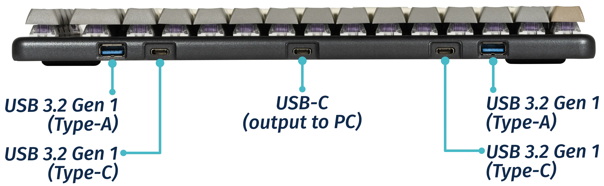
- Connect the USB-C side of either the USB-C/USB-C or USB-C/USB-A cable to the Launch's center USB-C port, shown above.
- Connect the other side of the cable to your computer.
- Connect any other USB devices to the four downstream USB ports on either side of the Launch.
Removing and installing keycaps:
Launch uses only three sizes of uniform profile keycaps, which allows for a high degree of customization. Any two keycaps of the same size can be swapped on the keyboard, and several extras are included in the box.
Tools required: Keycap puller
Time estimate: 20 minutes (to replace all keycaps)
Difficulty: Easy ●
Steps to remove a keycap:
- Separate the two wire loops of the keycap puller and place them around two opposite corners of the keycap.
- The keycap puller can be partially inserted over the sides of the key first, then twisted to go over the corners.
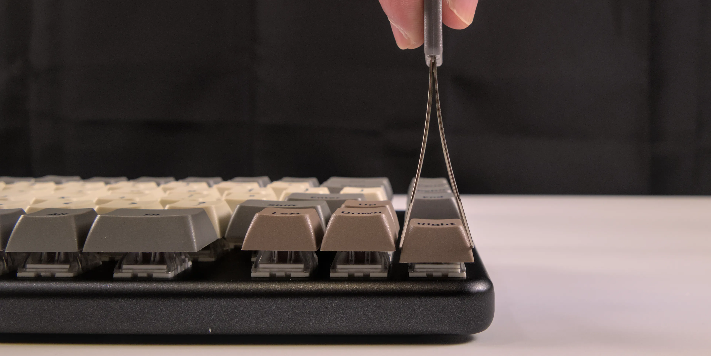
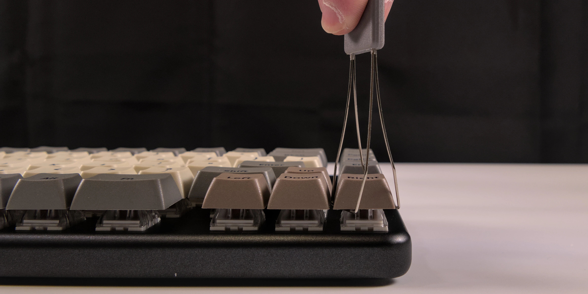
- Pull slowly but firmly (directly away from the keyboard) until the keycap slides off of the switch's stem.
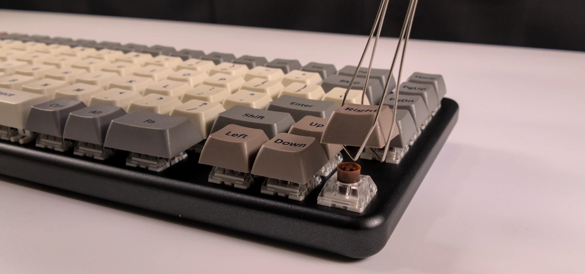
Removing larger keycaps:
- The included keycap puller works on all three of Launch's keycap sizes.
- The three 2U keycaps (both space bars and left shift) have stabilizers, so be sure to pull both sides evenly.
- These 2U keycaps take slightly more pulling force than the rest of the keycaps.
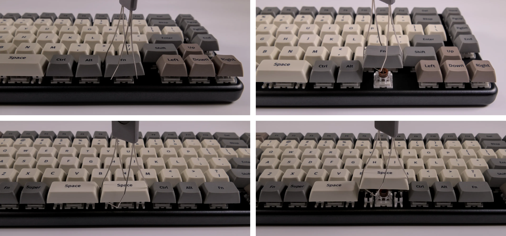
Steps to install a keycap:
- Position the keycap on top of the switch.
- Press the keycap down firmly until it's fully on the switch.
- The keycap will be held onto the switch by friction.
- The 2U keycaps with stabilizers require slightly more pressure to install.
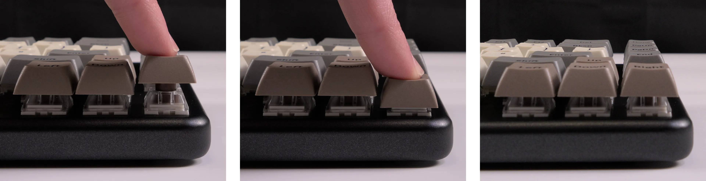
Removing and installing switches:
Because Launch uses Kailh hot swap sockets, key switches can be removed and installed without soldering.
If you are changing all of the switches in your Launch, it is recommended to completely remove the PCB, install the switches into the top case without the PCB, then install the PCB into the case and onto the switch pins. This makes switch installation easier and reduces the likelihood of bending switch pins or damaging the PCB.
If you are installing new switches, ensure that the switches you're installing are compatible with surface-mount (SMD) LEDs.
Tools required: MX-style switch puller
Time estimate: ~1 minute per switch
Difficulty: Medium ●
Steps to remove a switch:
- Remove the keycap on the switch you wish to remove.
- Place the two tongs of the switch removal tool into the switch's locking tabs on the top and bottom edges of the switch.
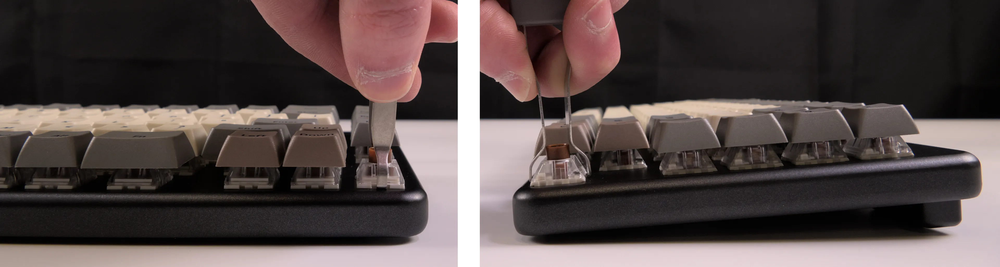
- Pinch the tongs together to release the switch's locking clips from the chassis.
- Pull the switch upwards out of the socket.
- The switch's locking tabs can sometimes catch on the edges of the chassis cutouts. If the switch feels stuck, remove the tool and press the switch back down into place, then try removing it again.
- Switches take more force to remove than keycaps.
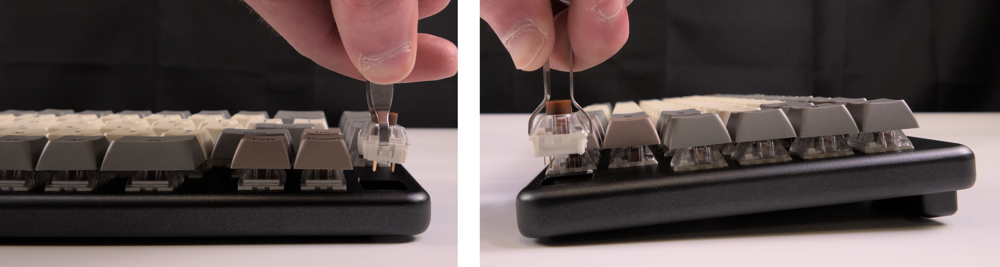
Steps to install a switch:
- Make sure the switch's pins are straight.
- If either of the pins is bent, gently bend it back into place.
- Caution: Attempting to install a switch with bent pins may damage the PCB and/or switch.
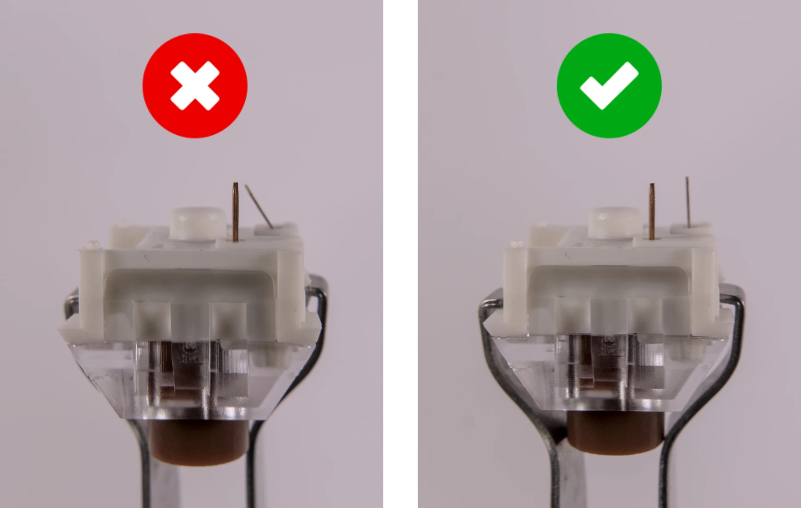
- Orient the switch so the clear LED window aligns with the LED on the PCB, near the top of the socket.
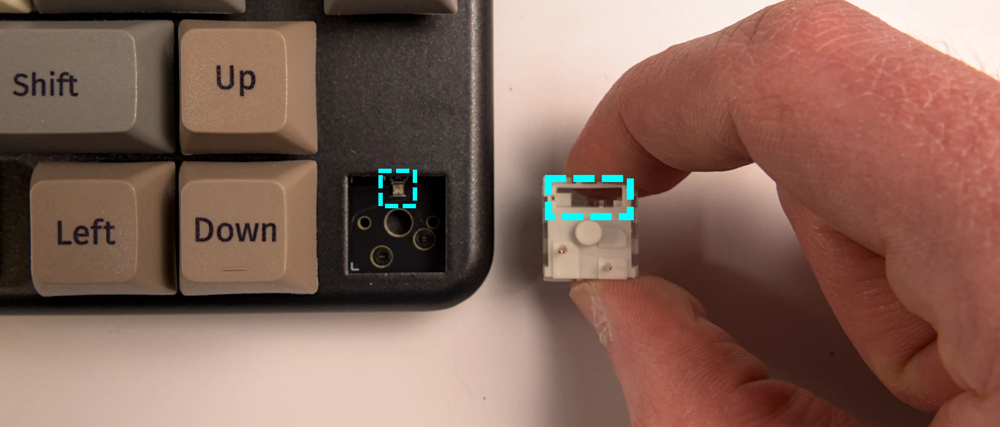
- Place the switch straight into the plate.
- Caution: Forcing the pins into the hot swap socket if the pins are not properly aligned could damage the PCB and/or switch.
- If you feel excessive resistance, pull the switch out, double-check that the pins are straight, and try installing the switch again.
- Once you feel the pins plug into the hot swap socket, press the switch down with more force to snap it into place within the chassis.
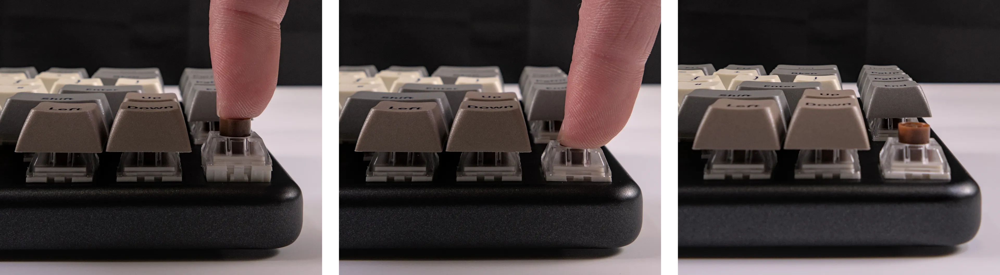
Removing the PCB:
Tools required: Keycap puller, MX-style switch puller, and cross-head (Phillips) screwdriver
Time estimate: 50 minutes
Difficulty: High ●
If the PCB in your Launch becomes damaged and needs to be replaced, or if you are changing all of the switches on the PCB, it can be removed and replaced using these instructions.
Steps to remove the PCB:
- Remove all of the keycaps and all of the switches.
- The 2U stabilizers do not need to be removed.
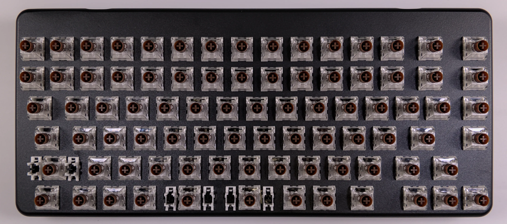 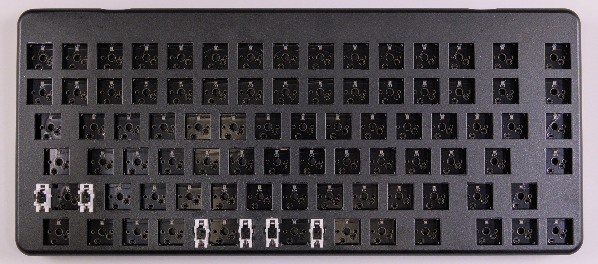
- Turn the keyboard over and remove the five bottom panel screws.
- The screws are set into adapters that may or may not come out with the screws.
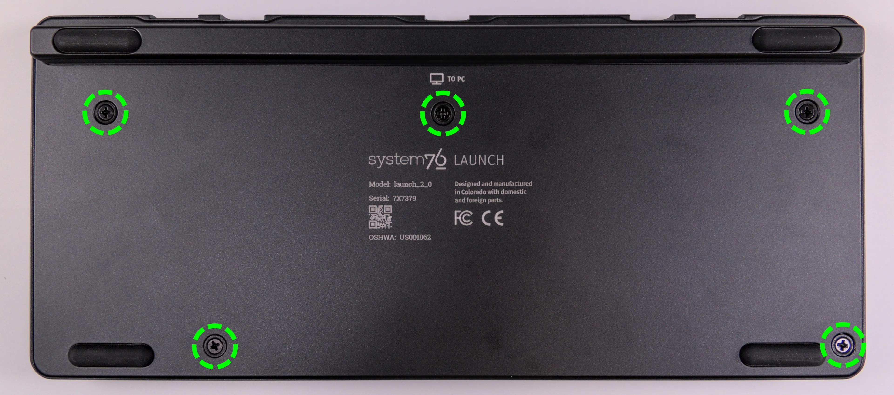
- Remove the bottom panel.
- If the magnetic lift bar is installed, it can be used as a handle.
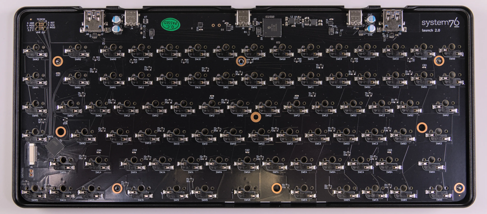
- Push the PCB up out of the chassis through one of the switch holes, then lift the PCB out of the chassis.
- To avoid the USB-C port catching on the chassis, push through one of the bottom row switch holes and lift the bottom edge of the PCB first.
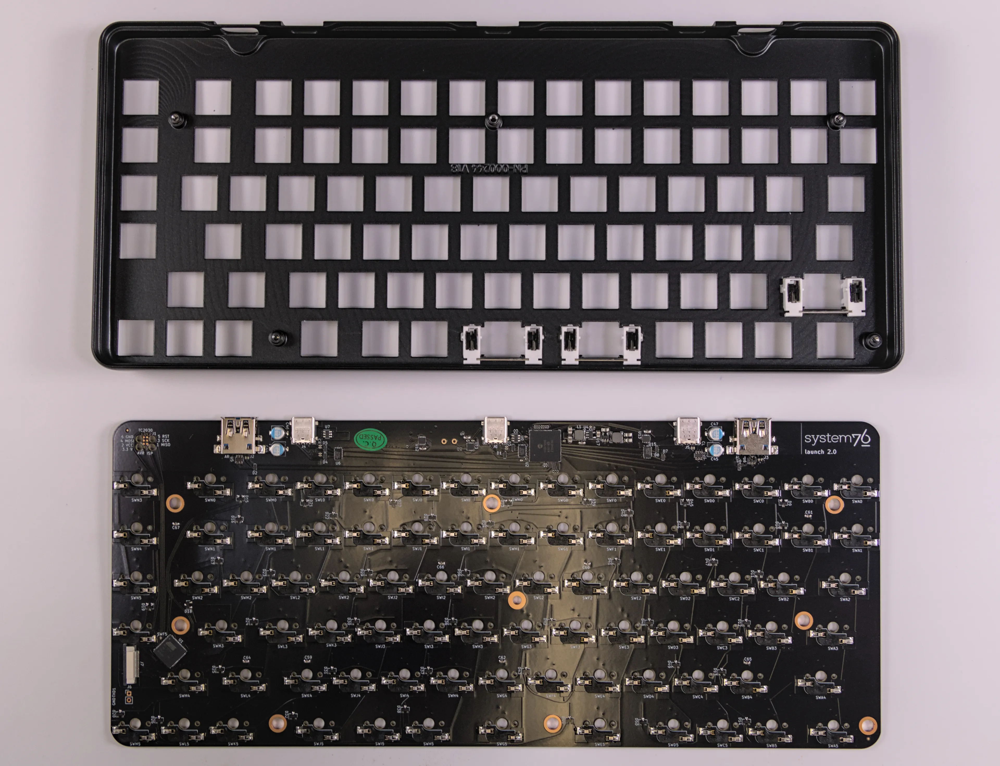
Steps to install the PCB:
- Install all of the switches into the chassis.
- The switches can also be installed after installing the PCB, but installing the switches first is recommended because it reduces the risk of individual bent pins damaging the PCB or switches during installation.
- Make sure the switches are in the correct orientation with the LED window at the top.
- The switches are not specific to their key/hole.
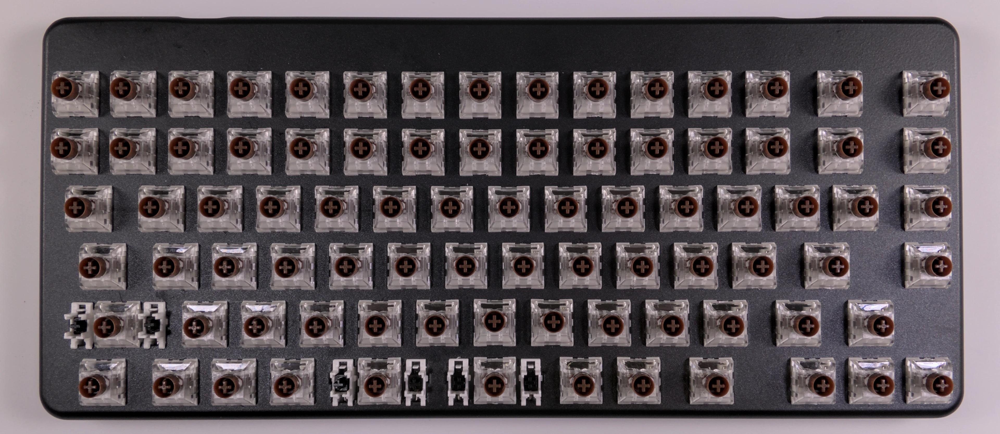
- Turn the chassis over and check that all of the switch pins are straight.
- Look down the rows of pins from the sides of the chassis to identify any bent pins.
- If any of the pins are bent when installing the PCB, the switch or the PCB may be damaged.
- In the image below, the pin marked with a red arrow is an example of a pin that is bent and needs to be straightened.
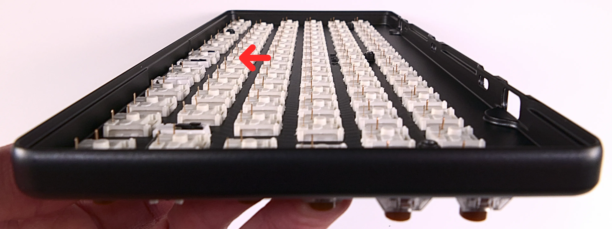
- Carefully line up the PCB with the switch pins and place it in the chassis, starting with the USB-C ports on the top edge.
- Evenly press the PCB down until all of the switch pins are fully seated in their sockets.
- It may help to pick up the keyboard and pinch to press both the PCB and the switches at the same time.
- If you feel excessive resistance, stop, remove the PCB, and ensure that all of the switch pins are lined up.
- The switch pins can be seen from the back of the sockets when they are fully seated, highlighted below.
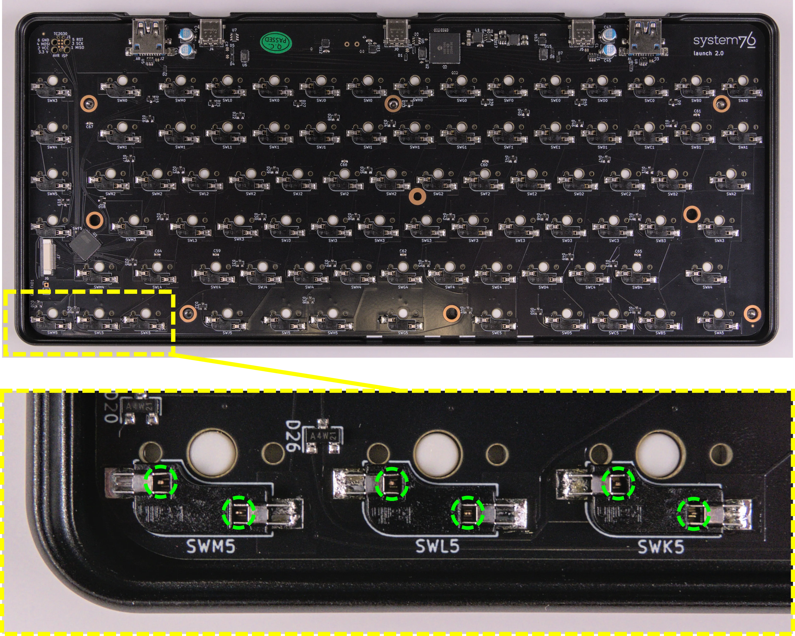
- Install the bottom cover and its four screws, flip the keyboard over, and put all of the keycaps back on.
- If any of the oval steel inserts came loose from the bottom cover, put them back into place before reinstalling the bottom cover.
- The steel inserts are held in with glue, but are also held in place magnetically if the magnetic lift bar is installed. They can be re-glued with CA glue.
- If any of the oval steel inserts came loose from the bottom cover, put them back into place before reinstalling the bottom cover.